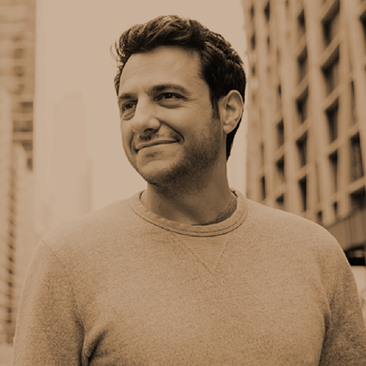

와 제 롤모델이 잡스에요!!! 아이폰 첫 출시되고 나서부터 계속 아이폰 쓰고 있는데 잡스가 너무 그리워요ㅠㅠ 지금은 돈만 벌려고 하는 것 같아서 디자인 발전도 없고ㅠㅠ와 제 롤모델이 잡스에요!!! 아이폰 첫 출시되고 나서부터 계속 아이폰 쓰고 있는데 잡스가 너무 그리워요ㅠㅠ 지금은 돈만 벌려고 하는 것 같아서 디자인 발전도 없고ㅠㅠ와 제 롤모델이 잡스에요!!! 아이폰 첫 출시되고 나서부터 계속 아이폰 쓰고 있는데 잡스가 너무 그리워요ㅠㅠ 지금은 돈만 벌려고 하는 것 같아서 디자인 발전도 없고ㅠㅠ와 제 롤모델이 잡스에요!!! 아이폰 첫 출시되고 나서부터 계속 아이폰 쓰고 있는데 잡스가 너무 그리워요ㅠㅠ 지금은 돈만 벌려고 하는 것 같아서 디자인 발전도 없고ㅠㅠ와 제 롤모델이 잡스에요!!! 아이폰 첫 출시되고 나서부터 계속 아이폰 쓰고 있는데 잡스가 너무 그리워요ㅠㅠ 지금은 돈만 벌려고 하는 것 같아서 디자인 발전도 없고ㅠㅠ
TED
오늘 할 일을 또
내일로 미룰 건가요?
한 때 ‘오늘의 할 일을 내일로 미루자’는 문장이 유행했던 적이 있었다. 각박한 현실에 찌들어 사는 이들에게 ‘잠시나마 걱정을 내려놓고 여유로운 하루를 보내라’는 의미로 유행했던 것이 아닐까 추측해본다. 아직도 오늘 할 일을 내일로 미루고 있다면, 또 시간이 없다는 말을 자주 한다면 주목해보자. 당신의 시간관리를 도와줄 짧은 영상을 준비했다.
-

Tim Urban
할 일을 미루는 사람의 심리
팀 어번 _ 블로그 작가
팀 어번은 모든 사람의 뇌에는 ‘합리적인 의사결정자’가 있는데, 할 일을 미루는 사람의 뇌에만 ‘순간적 만족감 원숭이’가 산다고 말한다. 이 원숭이는 현재의 만족만을 추구하고 쉽고 재미있는 일만 하려하는데, 원숭이가 ‘합리적 의사결정자’를 운전대에서 떨어뜨려 놓고 운전대를 잡을 때, 사람은 그때 할 일을 미룬다는 것이다. 그렇다면 사람들은 미뤘던 일을 언제 하게 될까? 바로 ‘패닉 괴물’이 등장했을 때이다. ‘패닉 괴물’은 마감 기한이 코앞으로 다가왔을 때, 미루기에는 상황이 너무 안 좋을 때, 하지 않으면 미래가 깜깜할 때 등장한다. 이 괴물은 원숭이를 숨게 만들고, ‘합리적 의사결정자’가 다시 운전대를 잡게 만드는 역할을 하게 한다. 해야 할 일을 미루고 있을 때 한번쯤 생각해보자. ‘순간적 만족감 원숭이’를 이길 수 있는 ‘합리적인 의사결정자’를 만들어 보겠노라고.
-
Laura
Vanderkam자유시간을 컨트롤하는 방법
로라 밴더캠 _ 작가
많은 사람들이 우리에게 주어진 자유시간을 과소평가하고 있다. 로라 밴더캠은 매일 운동을 할 수 없고, 해야하는데 할 수 없었던 그 일은 사실 시간이 없어서가 아니라 그 일이 우선순위가 아니었기 때문이라고 말한다. ‘저는 시간이 없어요’라는 말은 종종 ‘그건 제 우선순위가 아니에요’라는 의미로 표현된다. 시간을 아낀다, 없는 시간을 쪼갠다는 것 보다 자유시간을 적절하게 보내고 중요한 일을 순서대로 처리하는 것이 훨씬 현명한 생각일 것이다. 우리는 시간을 만들어낼 수는 없지만, 시간은 쓰려고 하는 곳에 맞춰 늘어간다. 언제 실행할 지는 우리에게 달려있다. 우리에게는 많은 시간이 있고 멋진 일들을 하기 위해서는 그렇게 많은 시간이 필요하지 않다.
-
Matt Cutts
새로운 일을 시도하기에 충분한
30일의 시간
새로운 일을 시도하기에
충분한 30일의 시간
맷 커츠 _ 엔지니어
구글의 총괄엔지니어 맷 커츠는 무엇인가를 정말 간절히 원한다면, 30일이면 그 일을 충분히 할 수 있다고 말한다. 방법은 간단하다. 항상 해보고 싶었던 일을 생각한 뒤, 앞으로 30일 동안 그 일에 도전하는 것이다. 30일의 기간은 새로운 습관을 들이거나, 혹은 예전의 습관을 버리기에 충분한 시간이다. 맷 커츠는 30일 동안의 도전을 통해 세 가지를 배웠다. 시간을 흘려 보내는 대신 그 시간을 더 기억에 남는 순간으로 만들 수 있다는 것, 다양한 도전을 통해 자신감을 얻은 것, 작지만 지속적인 변화들이 오래 갈 가능성이 높다는 것이다. 좋든 싫든 30일이란 시간은 흘러가기 마련이다. 지금까지 항상 하고 싶었던 일이 무엇인지 생각해서 30일 동안 도전해 보는 건 어떨까?
-
최고예요
322
-
좋아요
322
-
슬퍼요
322
-
그저 그래요
322
-
화나요
322